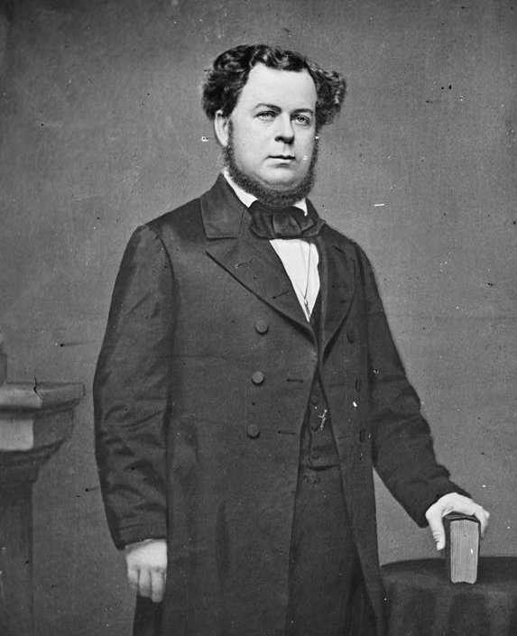
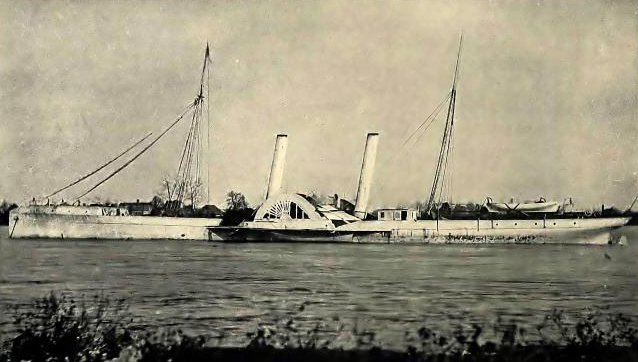

|
Nonexistent in 1860, the Confederate Navy played an
invaluable role in the Confederate war effort during the
Civil War. The Navy was created by an act of the Confederate
Provisional Congress on February 20, 1861. At that point it
was only a paper navy - it had no boats, and it had no
sailors. It fell upon Stephen Mallory, appointed Confederate
Secretary of the Navy on February 21st, to address these
issues. Mallory, a Senator from Florida before resigning
|

C.S. Secretary of the Navy Stephen Russell Mallory, one of only
two members of President Jefferson Davis' cabinet to hold his position for
the duration of the Civil War (Postmaster General John Reagan was the other).
|
from the U.S. Congress, had served as chairman of the Senate
Naval Affaris Committee. This experience would prove to be
vital, as he personally oversaw almost all of the
Confederacy's maritime policy and naval strategy during the
War.
Mallory's first concern upon assuming office was to build
a fleet. At the outset of the war, the Confederate
government could claim ownership of roughly a dozen vessels,
none of them warships. Mallory was determined to turn this
into an advantage. Since he was starting from scratch he
hoped to build a navy that utilized the latest technology -
ironclad warships, steam engines, and powerful, new guns.
The Confederacy did not have the capacity to build its own
ships, so Mallory began by trying to purchase ships from
Europe. The Lincoln administration quickly brought
diplomatic pressure to bear upon the European powers, and so
Mallory was only able to acquire a handful of wooden ships.
As such, the Confederacy was largely forced to make do with
its own resources. Under Mallory's direction, the Southern
Navy was able to develop a limited capacity for producing
its own ships. The Confederates were also able to salvage
numerous Union warships, converting most of them to
ironclads. The Confederacy also innovated, developing
ironclad rams, submarines such as the CSS H.L. Hunley, and
underwater mines called torpedoes. These efforts were fairly
successful. Over the course of the war, the Confederate
navy managed to put over 100 ships into service.
Ships required sailors aboard. And so, at the same time
Mallory was working to piece together a fleet, he was also
trying to recruit seamen. The officer corps was easier; 250
naval officers, including the talented Raphael Semmes,
Matthew Maury, Franklin Buchanan, and John Mercer Brooke,
had resigned from the United States Navy to join the
Confederate ranks. Filling out the rank-and-file, however,
proved a much more challenging task. The Confederate Navy
set up recruitment centers in each of the major Southern
cities, and offered enlistment bonuses of $50. There were
attempts to force the Army to reassign men to the Navy.
Mallory even agreed to use convicts on Confederate ships,
although he refused to allow African-Americans into the
naval ranks. In the end, the Confederate Navy was never
really able to raise enough men, and at its height in 1865
it only had a strength of about 4,000 enlisted men and
officers.
Doe to lack of manpower and ships, the Confederate Navy
could not hope to compete directly with its Union
counterpart. Given the Union's edge in resources and
technology, head-to-head confrontations tended to prove
disastrous for the Confederates. Over the course of the War,
only a half dozen Union warships were sunk in action by
Confederate warships. As such, the Southern Navy's efforts
were focused on three main activities: defense of rivers and
coastal fortifications, blockade running, and commerce
raiding.
The Confederates had a fair amount of success in
defensive warfare. The Navy helped keep the Mississippi
River in Confederate hands until mid-1863. Confederate
ironclads also protected smaller rivers, including the
Roanoke, the Neuse, the Chattahoochee, and the Red. Most of
the Confederacy's major cities were on the seacoast, and
were dependent on Confederate ships for protection. In
particular, the Navy played a critical role in defending
Richmond, Charleston, Savannah, and Mobile.
River and coastal defense may have been the most
important task performed by the Navy, but blockade running
has received a great deal more attention from historians.
|

A speedy Confederate blockade runner
|
Blockade runners were usually small, fast boats designed to
sneak past the Union warships responsible for preventing any
vessels from entering or leaving Southern ports. The
blockade runners were critical to the Confederate war effort
because they were the only way for the South to export
cotton, and to import raw materials and manufactured goods
from European countries. Although most blockade runners were
privately held, and were operated for profit, the
Confederate Navy also owned and operated several dozen of
the ships. Blockade runners were very effective. It is
estimated that over the course of the war an estimated 92%
of attempts to run the Union blockade were successful. The
odds of success were much higher in the early years of the
war than in the latter years, however, as the Union Navy
learned how to patrol the Southern coast more effectively.
Blockade running's counterpart was commerce raiding --
the attack and capture of Union merchant ships. The former
was undertaken to sustain the Southern economy, while the
latter was meant to disrupt the Northern economy. Commerce
raiding was much riskier than blockade running due to the
1856 Treaty of Paris, an international agreement that made
the practice illegal. The existence of the treaty meant that
the rewards of commerce raiding were minimal, because
captured ships and goods could not be easily sold.
Meanwhile, penalties were severe -- commerce raiders risked
imprisonment or execution as pirates. As such, private
interests invested their money in blockade runners, while
commerce raiding became almost exclusively the
responsibility of the Confederate Navy. There were several
successful commerce raiders, most notably the Shenandoah,
which captured or destroyed 36 ships, and the Alabama, which
was responsible for the demise of 71 Northern vessels.
Roughly five percent of Northern merchant ships fell victim
to commerce raiders over the course of the war. In addition,
it is estimated that for every one ship captured or
destroyed, another eight ships had to remain in port due to
the threat of commerce raiding. Altogether, 1,616 Northern
vessels with a total capacity of 774,000 tons were rendered
unavailable during the war. Necessarily, this had a negative
impact on the Northern economy.
And so, despite the fact that the Confederate Navy began
with almost nothing, it played a very important role in the
Confederate war effort, with an impact on both military and
economic affairs. The Confederate Navy was no match for its
Union counterpart, but it must nonetheless be judged at
least a partial success.
Source: Joan Waugh, ed., Facts on File Encyclopedia of American
History: Civil War and Reconstruction, 1856 to 1869 (New York: Facts on
File, 2003), 73-74.
|